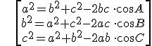
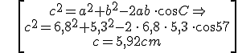
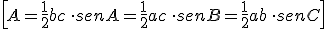

Ejemplo: a = 6,8 cm, b = 5,3 cm, C= 57o. Calcula c.

\[\begin{align} & {{c}^{2}}={{a}^{2}}+{{b}^{2}}-2ab\,\cdot \cos C\Rightarrow \\ & {{c}^{2}}={{6,8}^{2}}+{{5,3}^{2}}-2\,\cdot \,6,8\,\cdot \,5,3\,\cdot \cos 57 \\ & c=5,92cm \\ \end{align}\]
Área de un triángulo:

\[A=\frac{1}{2}bc\,\cdot senA=\frac{1}{2}ac\,\cdot senB=\frac{1}{2}ab\,\cdot senC\]
Ejercicios:
1.- Dos lados de un triángulo miden 3 y 5 cm, respectivamente, y forman un ángulo de 40º. Calcula el otro lado.
2.- Los lados de un triángulo miden 3, 5 y 6 metres, respectivamente. Calcula los tres ángulos.
Soluciones: 1) a = 3,3 cm; 2) A = 29,9o, B = 56,3o y C = 93,8o.